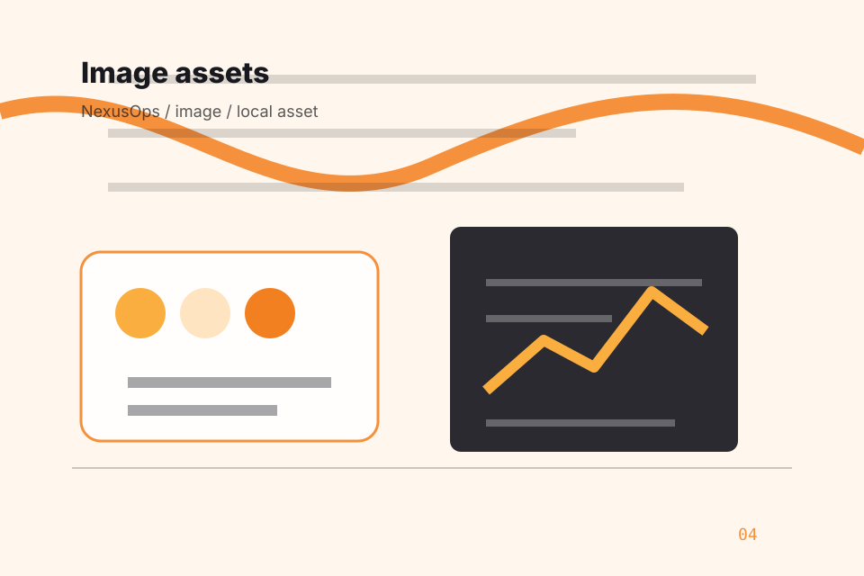
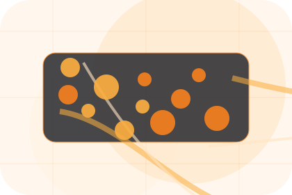
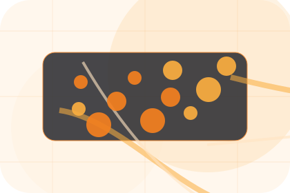

Problem names the real friction visitors bring to the home route, so the page feels relevant before any claim is made.
Technology
Nexus
Edge network product system for uptime and operational control.

Problem
Problem: what to solve
Teams need the issue, owner, urgency, and recovery route visible before a service conversation starts.
The copy connects that friction to practical risk, delay, confusion, or missed opportunity without exaggerating it.
The final cue moves visitors toward a clearer route instead of leaving them with the problem alone.
Risk
Risk: what to solve
The page makes network, device, cloud, backup, and response decisions easy to scan.
Pressure
Risk names the real friction visitors bring to the home route, so the page feels relevant before any claim is made.
Consequence
The copy connects that friction to practical risk, delay, confusion, or missed opportunity without exaggerating it.
Safer Step
The final cue moves visitors toward a clearer route instead of leaving them with the problem alone.
Promise
Promise: the better state
Visitors can move from problem recognition to a scoped audit without reading a generic pitch.
Better State
Promise defines what becomes clearer, easier, or safer when Nexus is the chosen route.
Practical Gain
The benefit is tied to uptime and operational control, not a vague quality claim.
Proof Route
Visitors get a linked path to compare the promise against services, standards, or examples.
Services
Compare service routes
Service cards stay compact so the site reads like a product page, not a brochure.


Best Fit
Who should use services and when it belongs in the home journey.
Systems
Systems in the system map
Systems, documentation, monitoring, and integrations become a clear operating map.
- 1
Inventory
Find the estate.
- 2
Route
Connect support paths.
- 3
Monitor
Watch the important edges.
Proof
Proof visitors can see
Dashboards, service routes, asset systems, and documentation records demonstrate delivery style.
Nexus structures proof around before, after, and a clear next route so visitors can compare the block quickly before they request an IT audit.
Open sitemapReliability
Reliability visitors can see
The layout makes uptime, response, ownership, and audit urgency visible on desktop and mobile.
The uncertainty, delay, or missed opportunity visitors bring into reliability.
The clearer, safer, or more valuable state Nexus is designed to support.
The visible cue that connects reliability to a believable decision, not a loose claim.
Questions
Questions before you request an IT audit
Short answers reduce friction while keeping the conversion route close.
Can this work for legacy systems?
Yes. The audit starts by mapping the estate and separating urgent stability work from long-term architecture.
Is the site static?
Yes. The pages, assets, docs, forms, and proof routes live locally in this folder.
Next step
Request an infrastructure audit.
A network-first IT site with technical proof, orange action paths, product cards, and status-aware conversion. Home ends with a direct path to request an IT audit, plus enough context for visitors who still need to compare.